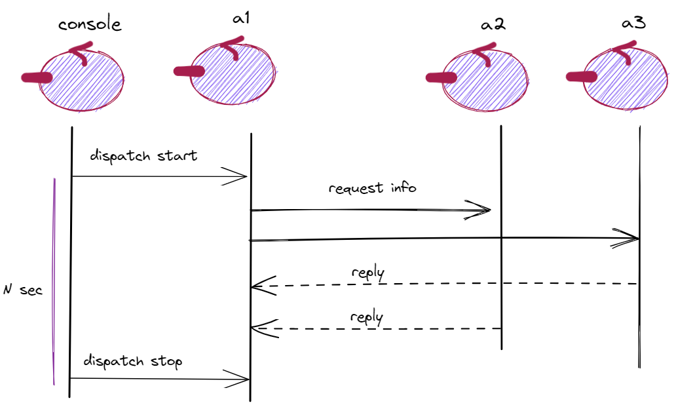
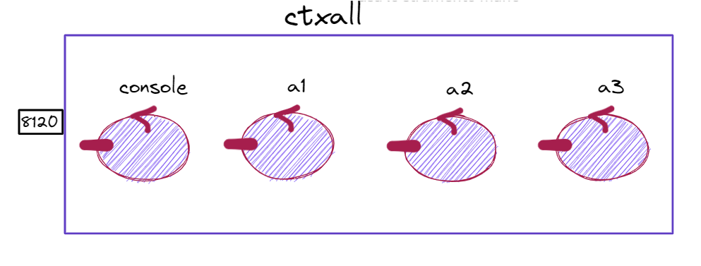
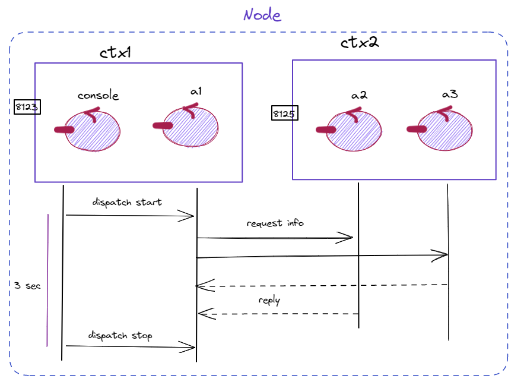

Actors23¶
Secondo Carl Hewitt (uno dei padri fondatori) il modello computazionale ad attori è stato ispirato, a differenza dei precedenti modelli di calcolo, dalla fisica, inclusa la relatività generale e la meccanica quantistica.
Vi è oggi una ampia gamma di proposte di linguaggi / librerie ad attori, tra cui:
Akka : ispirato a Modello computazionale ad attori di Hewitt. Per le motivazioni si veda Akka actors.
GO : ispirato a CSP propone goroutine e CanaliGO. Per la documentazione si veda GO doc.
Kotlin actors : propone croutines e channels (si veda Kotlin channel)
Un motto di riferimento alquanto significativo per questo modello è il seguente:
Actors23: problematiche affrontate¶
Cosa intendiamo per attore? Si veda: Il quadro generale, Actors23:l’attore e unibo.basicomm23.actors23.ActorBasic23.
Come può un attore inviare un messaggio ad un altro attore, conoscendone solo il nome? Si veda: ActorBasic23.sendMsg.
Come fa un attore ad inviare una risposta in modo correlato alla richiesta? Si veda: ActorBasic23.reply.
Può un attore interagire con componenti estermi al sistema di cui fa parte? Si veda Interazione con alieni.
Qual’è il comportamento di un attore per poter essere sia proattivo sia capace di alaborare messaggi a lui inviati? Si veda: Il comportamento di un attore.
Come può un attore eleborare messaggi ignorando i dettagli sui supporti di comunicazione? Si veda: Il comportamento di un attore e Actor23 mainLoop.
Come si passa da una collezione di attori ad una sistema distribuito? Si veda Descrizione di un sistema distribuito.
Come si costruisce un sistema distribuito? Si veda: Metodo di lavoro.
Il quadro generale¶
Nella nostra versione di questo modello computazionale, un attore presenta le seguenti proprietà:
ha un nome univoco nell’ambito di tutto il sistema;
è logicamente attivo, cioè dotato di flusso di controllo autonomo;
è capace di inviare messaggi ad un altro attore, di cui conosce il nome, incluso sè stesso;
è capace di eseguire elaborazioni autonome e/o elaborazioni di messaggi;
è dotato di una sua coda locale (msgQueue) in cui sono depositati i messaggi a lui inviati, quando questi arrivano mentre l’attore è impegnato in una fase di elaborazione;
elabora i messaggi ricevuti uno alla volta, prelevandoli dalla sua coda msgQueue) in modo First-In-First-Out (FIFO). Questo modo di operare vine denominato come attore message-driven.
nasce, vive e muore in un contesto che può essere comune a (molti) altri attori.
Al momento realizzeremo questo modello in Java associando ad ogni attore un Thread e realizzando la msgQueue con una BlokingQueue Java, ma motivi di efficienza ci porteranno, più avanti, ad utilizzare le coroutines e i channel di Kotlin.
Actors23: il contesto¶
Un sistema ad attori è in composto da una collezioni di attori, attivati in uno o più contesti. |

|
Un contesto rappresenta un nodo di elaborazione dotato di un server e di un porta di ingresso,
su cui altri contesti possono stabilire una Interconnessione, di solito basata sul protocollo |

|
Un contesto mantiene una tabella (ctxActorMap) con i riferimento agli attori locali e una tabella (ctxProxyMap) con i riferimenti ai Proxy che mantengono una Interconnessione con gli altri contesti del sistema. Si veda unibo.basicomm23.actors23.ActorBasic23 e unibo.basicomm23.actors23.Proxy |

|
Il Server di contesto depone i messaggi IApplMessage ricevuti su una Interconnessione sulla msgQueue dell’attore destinatario. Per questo scopo, il Sever si avvale di un unico gestore di messaggi di sistema: il ContextMsgHandler. La figura mostra il caso di attori locali ad un nodo di elaborazione che possono inviare/ricevere messaggi tra loro oppure elaborare messaggi inviati da componenti remoti. |

|
Un sistema ad attori è configurato in modo automatico a partire da una descrizione espressa in forma di base di consoscenza, in sintassi Prolog. Si veda Descrizione di un sistema distribuito. |
context(ctx1, "localhost", "TCP", "8923").
context(ctx2, "localhost", "TCP", "8925").
context(ctx3, "localhost", "TCP", "8927").
qactor( producer1, ctx1, <className>).
qactor( consumer, ctx2, <className>).
qactor( producer2, ctx3, <className>).
|
Rappresentazioni in Prolog: perchè?¶
La scelta di rappresentare il sistema e i messaggi usando il Prolog, permette di sfruttare il meccanismo della unificazione sintattica per accedere alle informazioni.
Ad esempio, consideriamo il seguente messaggio in forma di String:
msg( cmd, dispatch, main, led, turn(off), 1)
Volendo accedere al payload del messaggio, possiamo definire il seguente codice (come
TestUnit, nel file unibo.actors23/app/src/test/java/unibo/actors23/TestProlog.java):
public class TestProlog {
private String cmd;
private Struct cmdAsTerm;
@Before
public void setUp() {
cmd = "msg( cmd, dispatch, main, led, turn(off), 1)";
cmdAsTerm = (Struct) Term.createTerm(cmd);
}
@Test
public void test0() {
Struct payload = (Struct) cmdAsTerm.getArg(4);
assertEquals( payload.toString(), "turn(off)");
Term onOff = payload.getArg(0);
assert( onOff.toString().equals( "off" ));
}
Ma possiamo anche usare l’unificazione attivando la tuProlog_-engine:
@Test
public void testUnify() {
Prolog pengine = new Prolog();
String cmdTemplate = "msg( cmd, MSGTYPE, main, led, turn(X), 1)";
String goal = cmdAsTerm+"="+cmdTemplate;
try {
SolveInfo sol = pengine.solve( goal+"." );
Term msgType = sol.getVarValue("MSGTYPE");
assert( msgType.toString().equals( "dispatch" ));
Term data = sol.getVarValue("X");
assert( data.toString().equals( "off") );
} catch ( Exception e) { ...}
}
sysRules.pl¶
Il file contiene un Insieme di regole Prolog utili alla gestione della base di conoscenza che funge da descrizione del sistema.
Descrizione di un sistema distribuito¶
La descrizione di un sistema distribuito aviene esprimendo i fatti che si conoscono in merito al sistema, quali:
i contesti che rappresentano i diverso noi del sistema;
i nomi degli attori che operano nei diversi contesti;
le classi che realizzano gli attori.
Questi fatti formano una base di conoscenza, che scriviamo ed elaboriamo con sintassi Prolog. Ad esempio (si veda l’esempio Due contesti):
context(ctx1, "localhost", "TCP", "8123").
context(ctx2, "192.168.1.132", "TCP", "8125").
qactor( a1, ctx1, "unibo.actors23.example0.Actor1").
qactor( a2, ctx2, "unibo.actors23.example0.Actor2").
qactor( a3, ctx2, "unibo.actors23.example0.Actor2").
qactor( console, ctx1, "unibo.actors23.example0.ActorConsole").
Altre importanti conoscenze che ancdrebbero descritte sono:
la struttura dei messaggi con cui gli attori comunicano. Ad esempio:
Dispatch cmd : cmd(MOVE)
Request step : step( TIME )
Reply stepdone : stepdone(V)
Reply stepfail : stepfail(DURATION, CAUSE)
Al momento, non vi sono possibilità di descrizione di questo genere, che invece saranno introdotte quando svilupperemo un opportuno DSL.
showSystemConfiguration¶
Una regola Prolog di sysRules.pl visualizza la composizione del sistema. Per un esempio, si veda: Actor23Utils.
showSystemConfiguration :-
stdout <- println("&&&&&&&SysRules&&&&&&&&&"),
getTheContexts(CTXS),
stdout <- println('CONTEXTS IN THE SYSTEM:'),
showElements(CTXS),
stdout <- println('ACTORS IN THE SYSTEM:'),
getTheActors(ACTORS),
showElements(ACTORS),
stdout <- println("&&&&&&&SysRules&&&&&&&&&").
getTheContexts(CTXS) :-
findall(context( CTX, HOST, PROTOCOL, PORT ),
context( CTX, HOST, PROTOCOL, PORT ),
CTXS).
getTheActors(ACTORS) :-
findall(qactor( A, CTX, CLASS ),
qactor( A, CTX, CLASS ),
ACTORS).
showElements(ElementListString):-
text_term( ElementListString, ElementList ),
showListOfElements(ElementList).
showListOfElements([]).
showListOfElements([C|R]):-
stdout <- println( C ),
showElements(R).
E’ disponibile una classe che fornisce un insieme di metodi static di utilità, alcuni dei quali ‘nascondono’ all’application designer l’uso del Prolog.
unibo.basicomm23.actors23.Actor23Utils¶
public class Actor23Utils {
protected static Prolog pengine = new Prolog();
protected static Hashtable<String,ActorContext23> ctxsMap =
new Hashtable<String, ActorContext23>();
protected static String pfx = " %%% ";
public static boolean trace = false;
public static void showSystemConfiguration(){
try {
solve("showSystemConfiguration");
}catch( Exception e ){ e.printStackTrace();}
}
//Prolog-related
public static void loadTheory( String path ){ ... }
public static String solve(
String goal, String resVar ) throws Exception { ... }
public static boolean solve(
String goal ) throws Exception { ... }
//System-related
public static void createContexts( ...; showSystemConfiguration(); }
public static ActorContext23 createTheContext(
String ctx, String hostName ) throws Exception { ... }
public static void setTheActorsRemote(ActorContext23 ctx){ ... }
public static void createActorsOfContext(ActorContext23 ctx){ ... }
public static ActorBasic23 createTheActor( ActorContext23 ctx,
String actorName,String className ) throws Exception{ ... }
}
Actor23Utils.trace¶
Se la variabile boolean trace è posta true, i metodi visualizzano informazioni
utili a meglio comprendere il funzionamento run-time del sistema.
ActorUtils.createContexts¶
Il metodo createContexts svolge tutto il lavoro necessario per la creazione di un sistema, avvalendosi degli altri metodi di utlilità e delle regole definite in sysRules.pl.
public static void createContexts(
String hostName, String desrFilePath , String rulesFilePath ){
//CARICAMENTO BASI DI CONOSCENZA
loadTheory( desrFilePath );
loadTheory( rulesFilePath );
try {
String ctxs = solve("getCtxNames( X )", "X");
List<String> ctxsList = strRepToList(ctxs);
Iterator<String> iter = ctxsList.iterator();
//CREAZIONE DEI CONTESTI
while( iter.hasNext() ){
String ctx = iter.next();
String goal = "context( "+ ctx + ", "+ hostName +", PROTOCOL, PORT )";
boolean res = solve( goal );
if( res ) createTheContext(ctx, hostName );
}
//INIEZIONE DEGLI ATTORI REMOTI
Iterator<ActorContext23> allCtxs = ctxsMap.values().iterator();
while( allCtxs.hasNext() ){
setTheActorsRemote( allCtxs.next() );
}
//CREAZIONE DEGLI ATTORI LOCALI
allCtxs = ctxsMap.values().iterator();
while( allCtxs.hasNext() ){
createActorsOfContext( allCtxs.next() );
}
showSystemConfiguration();
} catch (Exception e) {... }
}
Actors23:l’attore¶
Un attore è un componente attivo che:
|

|
Il comportamento di un attore¶
Ogni attore possiede una coda dei messaggi a lui indirizzati.
La coda viene popolata dal contesto in cui l’attore opera.
Il comportamento dell’attore viene detto message-driven in quanto consiste in un ciclo (Actor23 mainLoop)
readFromQueue-elab.Ogni azione di elaborazione di messaggio deve terminare, in modo da permettere il proseguimento del ciclo.
Azioni proattive prolungate devono essere evitate. Una tecnica possibile è spezzare l’azione di lunga durata cedendo il controllo, dopo l’invio di un auto-massaggio.
Actor23 mainLoop¶
protected BlockingQueue<String> msgQueue =
new LinkedBlockingDeque<>();
protected void mainLoop(){
try {
while( true ) {
String msg = msgQueue.take();
IApplMessage inputMsg = new ApplMessage(msg);
elabMsg(inputMsg);
}
} catch (Exception e) {... }
}
protected abstract void elabMsg( IApplMessage msg ) throws Exception;
Actor23 elabMsg¶
Il metodo deve essere definito dalle classe applicative che specializzano unibo.basicomm23.actors23.ActorBasic23.
msgQueue¶
La variabile msgQueue rappresenta la coda dei messaggi di ingresso all’attore.
ActorBasic23: invio di messaggi¶
La classe di implementazione ActorBasic23 definisce metodi per l’invio asincrono di messaggi:
protected void forward(IApplMessage msg)
protected void request(IApplMessage msg)
protected void reply(IApplMessage answer,IApplMessage request)
Questi metodi sono realizzati mediante il metodo sendMsg, che invia un messaggio ad un attore destinatario distinguendo tra attore locale e attore remoto.
ActorBasic23.sendMsg¶
L’invio di un messaggio avviene come segue:
Se il destinatario è nello stesso contesto: si inserisce del messaggio nella msgQueue del destinatario.
Se il destinatario è in un altro contesto: si determina un proxy al contesto del destinatorio e lo si usa per trasmettere il messaggio al server remoto.
public static void sendMsg( IApplMessage msg, ActorContext23 ctx){
try {
String destActorName = msg.msgReceiver();
ActorBasic23 dest = ctx.getActor(destActorName);
if (dest != null) {
dest.msgQueue.put( msg ); //attore locale
} else {
sendMsgToRemoteActor(msg, ctx); //attoreremoto
}
}catch(Exception e){...}
}
...
}
ActorBasic23.sendMsgToRemoteActor¶
protected void sendMsgToRemoteActor( IApplMessage msg, ActorContext23 ctx){
String destActorName = msg.msgReceiver();
Proxy pxy = ctx.getProxy(destActorName);
if( pxy == null ) {
CommUtils.outred("Perhaps no setActorAsRemote for " + destActorName );
return;
}
pxy.sendMsgOnConnection(msg.toString());
}
}
ActorBasic23.autoMsg¶
Per inviare un messaggio a è stesso, l’attore può costruire un messaggio (dispatch) che abbia il suo nome come destinatario e inviare il messaggio con una normale sendMsg.
Si veda autoStartMsg in: ActorBasic23 e in Actor23 activation.
public void autoMsg(IApplMessage msg){
try {
msgQueue.put(msg);
} catch (InterruptedException e) {...}
}
ActorBasic23.reply¶
Replicare a una richiesta significa dare una risposta a un messaggio ricevuto in precedenza.
Il contesto che elabora un messaggio di richiesta, inserisce nel messaggio stesso un riferimento alla Interconnection su cui è stato ricevuto.
Un attore che preleva dalla sua msgQueue un messaggio di richiesta, lo memorizza in una tabella
HashMap<String, IApplMessage> requestMap.
L’operazione reply riceve in ingresso sia un messaggio di risposta (answer)
sia la richiesta originaria, da cui ricava la connessione su cui è stata ricevuta.
protected void reply(IApplMessage answer, IApplMessage request){
String reqId = request.msgId();
String caller = request.msgSender();
IApplMessage reqMsg = requestMap.remove(reqId);
if( reqMsg == null ) {
CommUtils.outred(name + "| answer NO request found");
return;
}
ActorBasic23 destactor = ctx.getActor(caller);
if( destactor != null ){ //Attore caller locale
try {
destactor.msgQueue.put( answer );
} catch (Exception e) {...}
}
else sendMessageOnConn(answer,reqMsg.getConn() );
}
sendMessageOnConn¶
Se il richiedente è remoto, la risposta vine inviata usando la connessione su cui era giunta la richiesta.
protected void sendMessageOnConn(IApplMessage msg, Interaction2021 conn){
try {
if( conn != null ) conn.forward( msg.toString() );
else CommUtils.outred(name + "| sendMessageOnConn conn is NULL" );
} catch (Exception e) {...}
}
ActorBasic23: emissione di eventi¶
La classe di implementazione ActorBasic23 definisce anche metodi per l’emissione di eventi:
protected void emit(IApplMessage msg)
public void emitLocalEvent( IApplMessage event )
public void emitLocalStreamEvent( IApplMessage event )
emit¶
Tra i diversi Tipi di messaggi, un messaggio trasmesso mediante emit deve essere un event, cioè informazione emessa senza un preciso destinatario e quindi inviata a tutti gli attori del sistema, locali e remoti (attore emettitore escluso).
emitLocalEvent¶
Trasmette un event solo agli attori locali al contesto dell’attore emettitore.
subscribeLocalActor¶
Un attore può lavorare come un produttore osservabile di dati, cioè può emettere informazioni osservabili da altri attori che si ‘registrano’ presso di lui usando il il metodo subscribeLocalActor.
public void subscribeLocalActor( String actorName){
ActorBasic23 actor = ctx.getActor(actorName);
if( actor != null ) actor.subscribers.add(this);
else CommUtils.outred("subscribeLocalActor ERROR:" + actorName);
}
Ciascun sottoscrittore elaborerà i dati ‘in parallelo’ con gli altri e potrà a sua volta funzionare come osservabile.
In questo modo è possibile realizzare insiemi di attori di lavoro in pipeline.
emitLocalStreamEvent¶
Trasmette un event solo agli attori locali che si siano ‘registrati’ presso l’attore emettitore mediante il metodo subscribeLocalActor.
Per un esempio si veda ProdConsStream.
Interazione con ‘alieni’¶
Detto alieno un componente software al di fuori di un dato sistema ad attori,
l’invio di un messaggio ad un alieno remoto si realizza usando un abilitatore alla trasmissione come ActorNaiveCaller introdotto in unibo.basicomm23.
Un attore può anche ricevere un messaggio di tipo request da un alieno remoto che conosce l’indirizzo e la porta del contesto in cui l’attore opera e la Struttura dei messaggi.
La reply realizzata sulla connessione su cui giunge la richiesta, permette di costruire sistemi ad attori che operano cone servizi. Per un esempio si veda l’esempio di Console esterna.
Un esempio di attori e contesti¶
In questo esempio seguiremo un metodo utile per costruire sistemi distribuiti in modo graduale.
Metodo di lavoro¶
Prima impostaiamo (e testiamo) un sistema locale, in cui tutti gli attori operano in un unico contesto. Successivamente, distribuiamo gli attori in contesti diversi (in accordo ai requisiti e/o alle indicazioni dell’analista/progettista) allocati sullo stesso computer o su computer diversi:
Definzione degli attori che compongono il sistema e delle loro interazioni.
Esecuzione del sistema in un unico contesto.
Distribuzione degli attori in più contesti sullo stesso computer.
Distribuzione degli attori in più contesti su diversi computer.
Esempio: attori e loro interazioni¶
unibo.actors23/app/src/main/java/unibo/actors23/example0
Introduciamo un sistema di 4 attori. Gli attori |

|
Poniamo in evidenza le interazioni. Qui usiamo diagrammi di sequenza UML, in cui le interazioni sono messaggi asincroni. Più avanti vedremo altre forme di rappresentazione. |
 |
ActorConsole¶
La Console è un attore che:
si auto-attiva
dopo
1secinvia un dispatch conid=cmdcon contenutostartall’attorea1dopo altri
2secinvia il dispatchcmdcon contenutostopall’attorea1
public class ActorConsole extends ActorBasic23 {
public ActorConsole(String name, ActorContext23 ctx) {
super(name,ctx);
autostart = true;
}
@Override
protected void elabMsg(IApplMessage msg) throws Exception {
IApplMessage startMsg =CommUtils.buildDispatch(name,"cmd","start","a1");
IApplMessage stopMsg =CommUtils.buildDispatch(name,"cmd","stop","a1");
CommUtils.delay(1000 );
sendMsg(startMsg);
CommUtils.delay(2000 );
sendMsg(stopMsg);
}
}
Actor1 (a1)¶
E’ attivato dal dispatch
cmdcon contenutostartinviato da ActorConsole.Invia, in modo asincrono, una richiesta con
id=infoada2eda3. (Gli attori destinatari hanno tempi di risposta diversi).Quando riceve una risposta dall’attore
X, invia adXuna nuova richiesta, se non ha in precedenza ricevuto un comando distop.
public class Actor1 extends ActorBasic23 {
protected int n = 1;
protected boolean stopped = false;
public Actor1(String name, ActorContext23 ctx) {
super(name, ctx);
}
@Override
protected void elabMsg( IApplMessage msg ) throws Exception{
if( msg.isDispatch() ) {
if (msg.msgId().equals("cmd") &&
msg.msgContent().equals("start")) {
sendRequestTo("a2");
sendRequestTo("a3");
} else if (msg.msgId().equals("cmd") &&
msg.msgContent().equals("stop")) {
stopped = true;
}
return;
}
if( msg.isReply() ){
CommUtils.delay(800); //Simulate some work ...
if (!stopped) sendRequestTo(msg.msgSender());
return;
}
}
protected void sendRequestTo(String dest){
IApplMessage m = CommUtils.buildRequest(name,"info","hello"+n,dest);
n++;
sendMsg(m);
}
}
Actor2 (a2,a3)¶
Entra in azione quando riceve una richiesta.
Elabora la richiesta e invia la risposta, con un tempo di ritardo se il suo nome è
a2.
public class Actor2 extends ActorBasic23 {
public Actor2(String name, ActorContext23 ctx) {
super(name,ctx);
}
@Override
protected void elabMsg(IApplMessage msg) throws Exception {
if( msg.isRequest() ) {
IApplMessage answer = CommUtils.buildReply(
name,"answer", "ok" + msg.msgContent(), msg.msgSender());
if( name.equals("a2")){
CommUtils.delay(500); //a2 ritarda a rispondere
}
//sendMsg(answer); //Deve avere un proxy al caller
reply( answer,msg );
}
}
}
Main che non usa descrizione¶
Il sistema può essere creato costruendo prima i contesti, poi gli attori e quindi ‘iniettando’ nei contesti la conoscenza degli attori locali e remoti.
public class MainActors23Verbose {
public void configureTheSystem(){
System.setProperty(org.slf4j.impl.SimpleLogger.DEFAULT_LOG_LEVEL_KEY, "ERROR");
//Actor23Utils.trace=true;
int port1 = 8123;
int port2 = 8125;
CommUtils.outblue("MainActors23 CREA I CONTESTI ");
ActorContext23 ctx1 = new ActorContext23("ctx1", "localhost", port1);
ActorContext23 ctx2 = new ActorContext23("ctx2", "localhost", port2);
CommUtils.outblue("MainActors23 CREA GLI ATTORI ");
Actor1 a1 = new Actor1("a1",ctx1);
Actor2 a2 = new Actor2("a2",ctx2);
Actor2 a3 = new Actor2("a3",ctx2);
ActorConsole console = new ActorConsole("console", ctx1); //Autostart
ctx1.addActor(a1);
ctx1.addActor(console);
ctx2.addActor(a2);
ctx2.addActor(a3);
CommUtils.outblue("MainActors23 FISSA GLI ACTOR REMOTI");
ctx1.setActorAsRemote("a2",""+port2, "localhost", ProtocolType.tcp);
ctx1.setActorAsRemote("a3",""+port2, "localhost", ProtocolType.tcp);
ctx2.setActorAsRemote("a1",""+port1, "localhost", ProtocolType.tcp);
ctx1.showActorNames();
ctx2.showActorNames();
}
public static void main(String[] args ){
new MainActors23().configureTheSystem();
}
}
Main basato su descrizione¶
Molto semplice la creazione del sistema quando si usa una descrizione del sistema stesso come fatti Prolog: tutti i passi del main precedente sono ora eseguiti da ActorUtils.createContexts.
public class MainConfigActors23 {
public void configureTheSystem(){
Actor23Utils.createContexts("localhost",
"app/src/main/java/unibo/actors23/example0/DESCRITTORE.pl",
"app/src/main/java/unibo/actors23/example0/sysRules.pl");
}
public static void main(String[] args ){
new MainProdConsAll().configureTheSystem();
}
}
DESCRITTORE.pl denota il file di descrizione che può assumere una delle diverse forme descritte in seguito,
come ad esempio Unico contesto.
Attori e contesti¶
Procediamo come indicato in: Metodo di lavoro.
Unico contesto¶
Esecuzione in un unico contesto. src\main\java\unibo\actors23\example0\onectx
%=============================================
% exampleActor23_all.pl description
%=============================================
context(ctxall, "localhost", "TCP", "8120").
qactor( a1, ctxall, "unibo.actors23.example0.Actor1").
qactor( a2, ctxall, "unibo.actors23.example0.Actor2").
qactor( a3, ctxall, "unibo.actors23.example0.Actor2").
qactor( console, ctxall, "unibo.actors23.example0.ActorConsole").
|
 |
Due contesti¶
Esecuzione in due contesti. Nello stesso computer: src\main\java\unibo\actors23\example0\twoctxonenode
%=============================================
% exampleActor23_2a.pl description
%=============================================
context(ctx1, "localhost", "TCP", "8123").
context(ctx2, "localhost", "TCP", "8125").
qactor( a1, ctx1, "unibo.actors23.example0.Actor1").
qactor( a2, ctx2, "unibo.actors23.example0.Actor2").
qactor( a3, ctx2, "unibo.actors23.example0.Actor2").
qactor( console, ctx1, "unibo.actors23.example0.ActorConsole").
Su due computer diversi: src\main\java\unibo\actors23\example0\twoctxtwonodes
%=============================================
% exampleActor23_2b.pl description
%=============================================
context(ctx1, "localhost", "TCP", "8123").
context(ctx2, "127.0.0.1", "TCP", "8125").
...
|
 |
Tre contesti¶
Esecuzione in tre contesti nello stesso computer: src\main\java\unibo\actors23\example0\threectx
%=============================================
% exampleActor23_3.pl description
%=============================================
context(ctx0, "localhost", "TCP", "8123").
context(ctx1, "localhost", "TCP", "8123").
context(ctx2, "localhost", "TCP", "8125").
qactor( a1, ctx1, "unibo.actors23.example0.Actor1").
qactor( a2, ctx2, "unibo.actors23.example0.Actor2").
qactor( a3, ctx2, "unibo.actors23.example0.Actor2").
qactor( console, ctx0, "unibo.actors23.example0.ActorConsole").
|

|
Console esterna¶
Attiviamo il sistema (in uno o più contesti) escludendo la console.
src/main/java/unibo/actors23/example0/pythonconsole %============================================= % exampleActor23_1.pl description %============================================= context(ctxall, "localhost", "TCP", "8123"). qactor( a1, ctxall, "unibo.actors23.example0.Actor1"). qactor( a2, ctxall, "unibo.actors23.example0..Actor2"). qactor( a3, ctxall, "unibo.actors23.example0.Actor2"). %% qactor( console, ctx0, "unibo.actors23.example0.ActorConsole").
Attiviamo una console aliena in Python. Si veda
app\src\main\java\unibo\actors23\example0\ConsoleTCP.ipynbche invia viaTCPsulla porta8120messaggi quali:startToa1 = "msg(cmd,dispatch,python,a1,start,3)" stopToa1 = "msg(cmd,dispatch,python,a1,stop,1)" reqtoa2 = "msg(cmd,request,python,a2,cmd(python),2)"
Actors23: la libreria¶
actors23-1.0.jar
unibo.basicomm23.interfaces.IContext23¶
interface IContext23 {
String getName();
Vector<String> getLocalActorNames( );
ActorBasic23 getActor(String actorName);
void addActor( ActorBasic23 a );
void removeActor(ActorBasic23 a);
void showActorNames( );
void setActorAsRemote(String actorName,
String entry, String host, ProtocolType protocol );
Proxy getProxy(String actorName);
void showProxies( );
void showActorNames( );
}
unibo.basicomm23.actors23.ActorContext23¶
class ActorContext23 implements IContext23 {
static final String actorReplyPrefix = "arply_";
protected HashMap<String, ActorBasic23> ctxActorMap = new HashMap<String, ActorBasic23>();
protected HashMap<String,Proxy> ctxProxyMap = new HashMap<String,Proxy>();
protected ServerFactory server;
protected String hostName;
protected int port;
ActorContext23( String name, String hostName, int port ){
this.name = name;
this.hostName = hostName;
this.port = port;
IApplMsgHandler ctxMsgHandler = new ContextMsgHandler(name+"CtxMsgHandler", this);
server = new ServerFactory("appl1Server",port, ProtocolType.tcp, ctxMsgHandler);
server.start();
}
//Implementazione dei metodi di IContext23
...
}
unibo.basicomm23.actors23.ContextMsgHandler¶
il ContextMsgHandler deve sapere a quale componente è destinato un messaggio
Lo standard interno sulla struttura dei messaggi permette all’handler di contesto di svolgere il ruolo di un interprete di sistema.
class ContextMsgHandler extends ApplMsgHandler implements IApplMsgHandler{
...
@Override
void elaborate(IApplMessage msg, Interaction conn) {
try {
if (msg.isRequest()) elabRequest(msg, conn);
else elabNonRequest(msg, conn);
}catch( Exception e){...}
}
...
}
Il metodo elaborate(String message) effettua il reindirizzamento del messaggio
all’attore destinatario, il quale interpreterà i contenuto del messaggio.
Elaborazione di richieste¶
protected void elabRequest( IApplMessage msg, Interaction conn ) throws Exception {
String senderName = msg.msgSender();
String actorRepyName = ActorContext23.actorReplyPrefix+senderName;
elabNonRequest(msg,conn);
}
Elaborazione di altri messaggi¶
protected void elabNonRequest(
IApplMessage msg, Interaction conn ) throws Exception {
ActorBasic23 a = ctx.getActor( msg.msgReceiver()) ;
if( a != null ) { //Il rdestinarario è locale al contesto
a.msgQueue.put(msg.toString());
}else{
String errorMsg = name + " | actor unknown:"+msg.msgReceiver();
CommUtils.outred(errorMsg);
throw new Exception(errorMsg); }
}
}
ActorBasic23¶
unibo.basicomm23.interfaces.IActor23¶
public interface IActor23 {
String getName();
String getContextName();
void activate();
void activateAndStart();
}
unibo.basicomm23.actors23.ActorBasic23¶
public abstract class ActorBasic23 implements IActor23 {
protected BlockingQueue<String> msgQueue = new LinkedBlockingDeque<>();
protected String name="dummy";
protected boolean autostart = false;
protected ActorContext23 ctx;
protected IApplMessage autoStartMsg ;
ActorBasic23(String name, ActorContext23 ctx ){
this.name = name;
this.ctx = ctx;
autoStartMsg = CommUtils.buildDispatch(name, "cmd", "start", name);
}
//A message as a String must be well-formed
protected void elabMsg( String msg ) throws Exception{
IApplMessage m = new ApplMessage(msg);
elabMsg(m);
}
//The elaboration of a IApplMessage must be definied by specilizations
protected abstract void elabMsg( IApplMessage msg ) throws Exception;
//Communication methods
protected void sendMsg( IApplMessage msg ) {
...
}
}
Si veda ActorBasic23.sendMsg e auto-massaggio.
Actor23 activation¶
void activate(){
new Thread(){ void run(){ mainLoop(); } }.start();
}
void activateAndStart(){
new Thread(){
void run(){ sendMsg( autoStartMsg ); mainLoop();}
}.start();
}
Actor23 Proxy¶

unibo.basicomm23.actors23.Proxy¶
class Proxy{
public Proxy(String name, String host, String entry, ProtocolType protocol ) {
try {
this.name = name;
this.entry = entry;
this.protocol = protocol;
setConnection(host, entry, protocol);
activateReceiver(conn);
} catch (Exception e) {...}
}
protected void setConnection(
String host, String entry, ProtocolType protocol ) throws Exception {
//Stabilisce una connessione usando il protocollo indicato
...
}
Proxy sendMsgOnConnection¶
public void sendMsgOnConnection( String msg ) { ... }
protected void activateReceiver( Interaction conn) {
new Thread() {
public void run() {
try {
while(true) {
String msgStr = conn.receiveMsg();
IApplMessage msg = new ApplMessage(msgStr);
}
} catch (Exception e) {... }
}
}.start();
}
}
Proxy activateReceiver¶
Ogni Proxy attiva anche un ricevitore sulla connessione, per ricevere informazioni (di fatto messaggi di tio :ref:`reply<ActorBasic23.reply>) inviate dal server remoto.
protected void activateReceiver( Interaction conn) {
new Thread() {
public void run() {
try {
while(true) {
String msgStr = conn.receiveMsg();
IApplMessage msg = new ApplMessage(msgStr);
ActorBasic23 dest = ctx.getActor(msg.msgReceiver());
if( dest != null ) dest.msgQueue.put(msg);
else CommUtils.outred( pfx + name
+" | activateReceiver INCOSISTENCE for "+dest);
}
} catch (Exception e) {...}
}
}.start();
}
Si veda Actors23FSM.
Si veda Actors23Coap.
SistemiActors23: sviluppo di sistemi ad attori